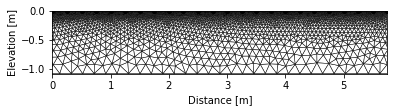

Monitoring of drying under winter wheat by ERT¶
This notebook shows how time-lapse electrical resistivity tomography (ERT) can help to follow the soil drying (mainly attributed to root water uptake) during the growth season.
This dataset was collected on 24 pins array (0.25 m electrode spacing) using a dipole-dipole sequence with a Syscal Pro 48 (Iris Instruments, Orléans, France). The experiment took place at Worburn (UK), a research station managed by Rothamsted Research in 2017 under winter wheat.
import matplotlib.pyplot as plt
from resipy.R2 import R2
import os
print(os.getcwd())
datadir = '../data/blanchy/dc-2d-timelapse/data/'
print
---------------------------------------------------------------------------
ModuleNotFoundError Traceback (most recent call last)
<ipython-input-2-fcca4b3127a5> in <module>
1 import matplotlib.pyplot as plt
----> 2 from resipy.R2 import R2
3 import os
4 print(os.getcwd())
5 datadir = '../data/blanchy/dc-2d-timelapse/data/'
ModuleNotFoundError: No module named 'resipy'
k = R2() # initiate an R2 instance
k.createTimeLapseSurvey([datadir + '17031501.csv',
datadir + '17040301.csv',
datadir + '17051601.csv'], ftype='Syscal')
k.filterUnpaired() # remove dummy quadrupoles added to make dipole-dipole faster
Working directory is: C:UsersgcassAnaconda3envspython36libsite-packagesresipyinvdir clearing the dirname Inf or NaN: filterData: 0 / 344 quadrupoles removed. strange quadrupoles: filterData: 0 / 344 quadrupoles removed. 36/344 reciprocal measurements NOT found. 0 measurements error > 20 % ../data/blanchy/dc-2d-timelapse/data/17031501.csv imported --------- ../data/blanchy/dc-2d-timelapse/data/17031501.csv imported Inf or NaN: filterData: 0 / 344 quadrupoles removed. strange quadrupoles: filterData: 0 / 344 quadrupoles removed. 36/344 reciprocal measurements NOT found. 0 measurements error > 20 % ../data/blanchy/dc-2d-timelapse/data/17040301.csv imported --------- ../data/blanchy/dc-2d-timelapse/data/17040301.csv imported Inf or NaN: filterData: 0 / 314 quadrupoles removed. strange quadrupoles: filterData: 0 / 314 quadrupoles removed. 48/314 reciprocal measurements NOT found. 0 measurements error > 20 % ../data/blanchy/dc-2d-timelapse/data/17051601.csv imported --------- ../data/blanchy/dc-2d-timelapse/data/17051601.csv imported creating bigSurvey Inf or NaN: filterData: 0 / 344 quadrupoles removed. strange quadrupoles: filterData: 0 / 344 quadrupoles removed. 36/344 reciprocal measurements NOT found. 0 measurements error > 20 % 3 survey files imported removeUnpaired:filterData: 36 / 344 quadrupoles removed. removeUnpaired:filterData: 36 / 344 quadrupoles removed. removeUnpaired:filterData: 48 / 314 quadrupoles removed.
120
fig, axs = plt.subplots(3, 1, figsize=(10, 9), sharex=True)
ax = axs[0]
k.showPseudo(index=0, ax=ax, vmin=30, vmax=80)
ax.set_title('(a) 2017-03-15')
ax.set_xlabel('')
ax = axs[1]
k.showPseudo(index=1, ax=ax, vmin=30, vmax=80)
ax.set_title('(b) 2017-04-03')
ax.set_xlabel('')
ax = axs[2]
k.showPseudo(index=2, ax=ax, vmin=30, vmax=80)
ax.set_title('(c) 2017-05-16')
Text(0.5, 1.0, '(c) 2017-05-16')
k.fitErrorPwl(index=-2) # fit a power-law error model for all dataset aggregated
Error model is R_err = 0.00 R_avg^1.123 (R^2 = 0.9851)

k.createMesh(typ='trian', cl=0.02, cl_factor=20, show_output=False) # create a triangular mesh with a characteristic length of 0.5
k.showMesh() # display the mesh
computed DOI : -2.17 Generating gmsh input file... doi in gmshWrap.py: -2.166667 dp_len in gmshWrap.py: 5.750000 adding surface points and electrodes to input file... 0 polygons added to input file 0 boundary(ies) added to input file writing .geo to file completed, save location: C:UsersgcassAnaconda3envspython36libsite-packagesresipyinvdir parsing gmsh mesh... importing node coordinates... reading connection matrix ignoring 0 non-triangle elements in the mesh file, as they are not required for R2 634 element node orderings had to be corrected because they were found to be orientated clockwise written mesh.dat file to C:UsersgcassAnaconda3envspython36libsite-packagesresipyinvdirmesh.dat Mesh plotted in 0.27829 seconds
k.invert(parallel=True) # run the inversion (and write R2.in and protocol.dat automatically)
Writing .in file and protocol.dat ...
written mesh.dat file to
C:UsersgcassAnaconda3envspython36libsite-packagesresipyinvdirmesh.dat
Matching quadrupoles between surveys for difference inversion ...266 in common...done in 0.017051s
done
------------ INVERTING REFERENCE SURVEY ---------------
written mesh.dat file to
C:UsersgcassAnaconda3envspython36libsite-packagesresipyinvdirmesh.dat
>> R 2 R e s i s t i v i t y I n v e r s i o n v3.3 <<
>> D a t e : 18 - 03 - 2020
>> My beautiful survey
>> I n v e r s e S o l u t i o n S e l e c t e d <<
>> Determining storage needed for finite element conductance matrix
>> Generating index array for finite element conductance matrix
>> Reading start resistivity from res0.dat
>> R e g u l a r i s e d T y p e <<
>> L i n e a r F i l t e r <<
>> L o g - D a t a I n v e r s i o n <<
>> N o r m a l R e g u l a r i s a t i o n <<
>> D a t a w e i g h t s w i l l b e m o d i f i e d <<
Processing dataset 1
Measurements read: 154 Measurements rejected: 0
Geometric mean of apparent resistivities: 0.53798E+02
>> Total Memory required is: 0.423 Gb
Iteration 1
Initial RMS Misfit: 27.13 Number of data ignored: 0
Alpha: 16.041 RMS Misfit: 0.91
Step length set to 1.00000
Final RMS Misfit: 0.91
Cannot fit quadratic through step lengths
Final RMS Misfit: 0.91
Solution converged - Outputing results to file
Calculating sensitivity map
Processing dataset 2
End of data: Terminating
--------------------- MAIN INVERSION ------------------
________________System-Check__________________
Processor info: Intel64 Family 6 Model 142 Stepping 9, GenuineIntel
Number of logical CPUs: 4
Kernel type: Windows
Total RAM available: 16384 Mb
0/2 inversions completed
1/2 inversions completed
2/2 inversions completed
----------- END OF INVERSION IN // ----------
fig, axs = plt.subplots(2, 1, figsize=(10, 6), sharex=True)
ax = axs[0]
ax.set_title('(a) 15th March to 3rd April')
k.showResults(ax=ax, index=1, attr='difference(percent)', vmin=0, vmax=50, sens=False)
ax.set_xlabel(None)
ax = axs[1]
ax.set_title('(b) 15th March to 16th May')
k.showResults(ax=ax, index=2, attr='difference(percent)', vmin=0, vmax=50, sens=False)
fig.tight_layout()
Mesh plotted in 0.17653 seconds
Mesh plotted in 0.21872 seconds
Download python script: blanchy_wheat-rwu-ert-timelapse.py
Download Jupyter notebook: blanchy_wheat-rwu-ert-timelapse.ipynb
View the notebook in the Jupyter nbviewer
Run this example interactively: